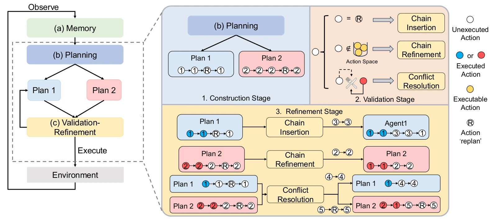

ELHPlanELHPlan: Efficient Long-Horizon Task Planning for Multi-Agent Collaboration
Intention-bound Action Chains combine longer planning horizons with proactive feasibility checks and targeted refinement in partially observable environments.
30–40% of baseline token usage on TDW-MAT and C-WAH
My contribution
Designed and implemented the planning framework, validation and refinement mechanisms, and experimental pipeline.